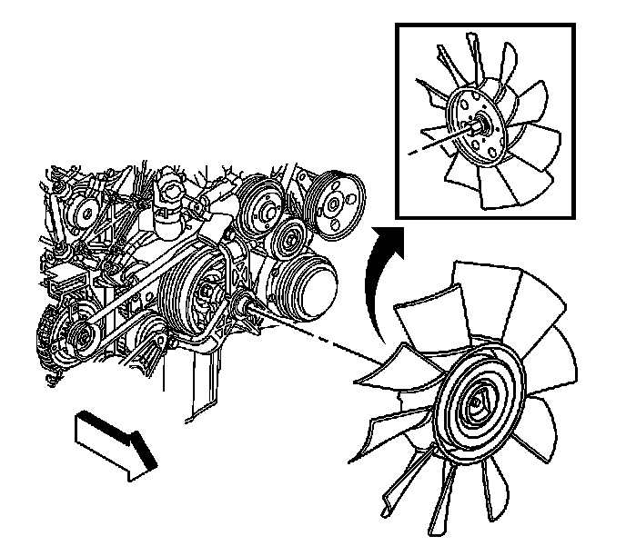

Fan Replacement
Fan Replacement
Tools Required
J 41240-2 36 mm Wrench
Removal Procedure

1. Remove the air cleaner intake duct. Refer to Air Cleaner Outlet Duct Replacement (Service and Repair).
Important:
1. The fan nut has left hand (REVERSE) threads.
2. Do not completely remove the fan from the crank adapter shaft.
2. Loosen the fan nut from the crank adapter shaft using J 41240-2 36 mm Wrench.
3. Raise and support the vehicle. Refer to Lifting and Jacking the Vehicle (Service and Repair).
4. Disconnect the engine wiring harness from the engine frame and reposition aside.
5. Continue to loosen the fan nut and disconnect the fan from the crank adapter shaft.
6. Remove fan from vehicle.
Installation Procedure
1. Install fan from vehicle.
2. Connect the fan to the crank adapter shaft.
3. Connect the engine wiring harness to the engine frame.
4. Lower the vehicle.
Notice: Refer to Fastener Notice, Fastener Notice.
Important: The fan nut has right hand (REVERSE) threads.
5. Tighten the fan nut to the crank adapter shaft using J 41240-2 36 mm Wrench.
Tighten
Tighten the nut to 100 N.m (74 lb ft).
6. Install the air cleaner intake duct. Refer to Air Cleaner Outlet Duct Replacement (Service and Repair).